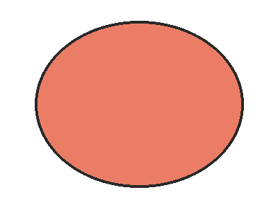

这一段由外部编辑器渲染，包含加粗、斜体和行内代码。HTML 入口必须保留这些既有样式，不重新走 Markdown 主题渲染。
这是外部 HTML 中的引用块，左边框颜色是上游排版意图的一部分。
| 要素 | 验证点 |
|---|---|
| 样式内联 | 提交时保留 border 与 padding |
| 相对图片 | 按 asset_base_dir 解析并上传为微信图床地址 |
| 这是一个非常长的单元格用来测试窄屏下的换行表现是否正常 | 长文本应折行 |
透明背景图片：

print("外部 HTML 代码块")参考：草稿箱文档；该链接较长，转换参考链接后不应撑破窄屏排版。